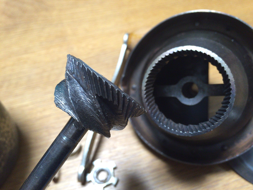
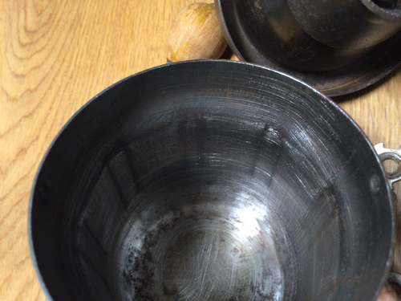
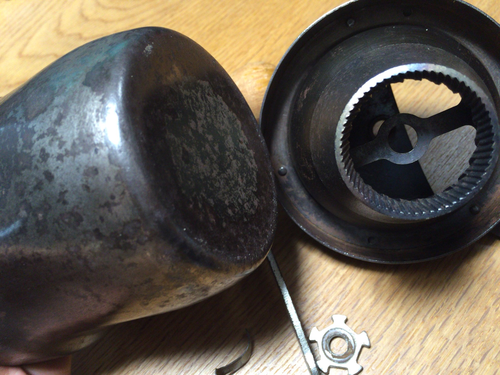
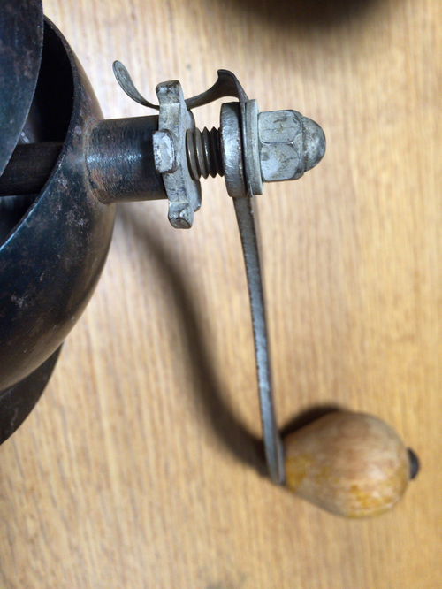
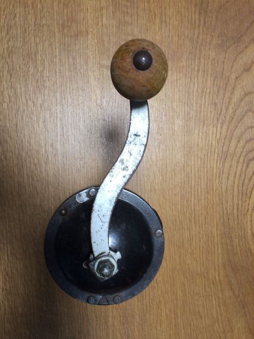
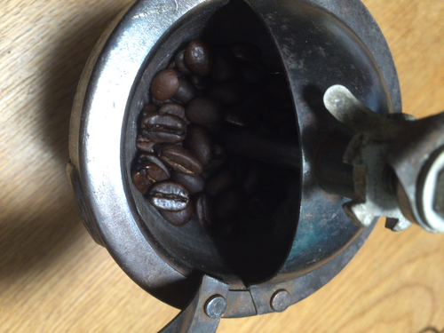
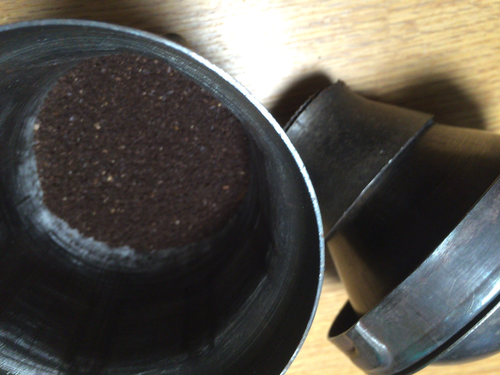
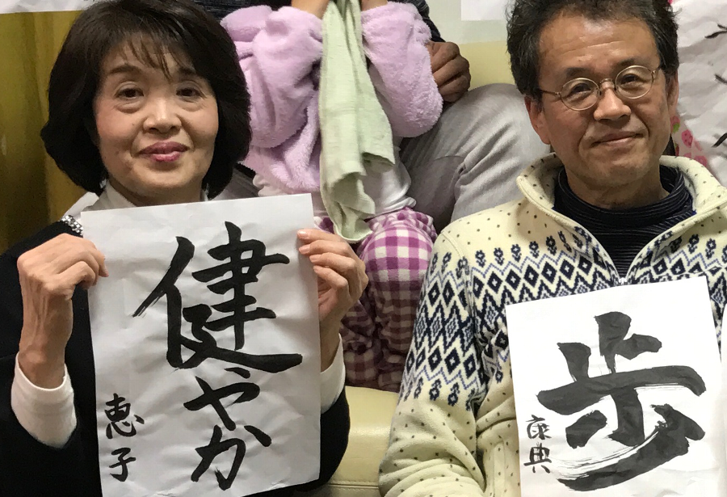

小さなお店の繁盛日記
広島の街の片隅で、ひとりのコーヒー好きが始めた小さな自家焙煎のお店。香珈珈琲の歴史は、「美味しいコーヒーを自分で焼いてみたい」というシンプルな好奇心から始まりました。
最初の焙煎は、正直に言えば失敗の連続でした。豆が均一に焼けなかったり、焦げすぎたり。でも、その試行錯誤の中でコーヒーへの理解が深まり、少しずつ理想の味に近づいていきました。
今では月2回の土曜日だけの営業ながら、遠くからわざわざ足を運んでくださるお客様も増えました。それが何よりの励みです。
「広島をコーヒーの町にするための小さなお店の小さな挑戦。」——これが香珈珈琲のテーマです。







